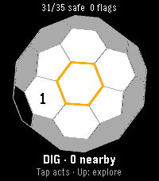
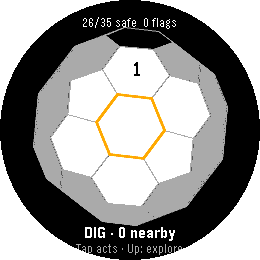
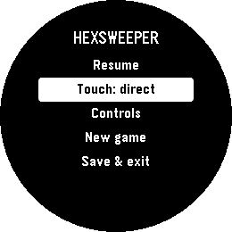
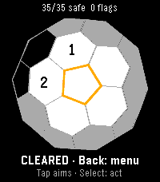

Luke Steuber · Native Pebble watchapp
A whole minefield.
On one small sphere.
42 cells. Seven mines. Drag to rotate, tap to aim, and Select to dig.
Explore reaches every cell with the watch buttons. Direct taps are optional.

Pebble Time 2 · 200 × 228

Pebble Round 2 · 260 × 260These are native emulator captures. Physical touch accuracy, readability and performance remain untested.
Controls and completed games

Optional direct touch

Complete button-only win